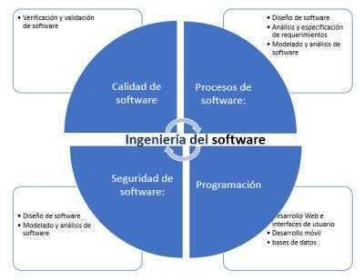

Ser reconocida como una Escuela que contribuya a la excelencia académica de la Universidad, promoviendo el desarrollo académico, profesional y personal de sus estudiantes y profesores, mediante la promoción de iniciativas, proyectos, valores y principios que trasciendan el ámbito institucional, y que dejen huella en la sociedad costarricense y fuera de nuestras fronteras.
Formar profesionales en ingeniería del software íntegros y conscientes de sus responsabilidades profesionales, que se guíen por los principios y valores propios de la Universidad Cenfotec, y que los promuevan en sus interacciones familiares, sociales y profesionales, de forma que contribuyan al desarrollo de la sociedad, con responsabilidad social, ética y moral.

Escuela Ingeniería del Software
Se enfoca en los procesos de recopilación de las necesidades de los usuarios, interesados y clientes, y el posterior análisis y documentación de dichas necesidades.
Se enfoca en las estrategias, técnicas, representaciones y patrones usados para determinar cómo se van a implementar los sistemas de software y sus componentes.
Se enfoca en las técnicas que permiten determinar si un software satisface las necesidades del cliente, al cumplir con las especificaciones de requerimientos brindadas.